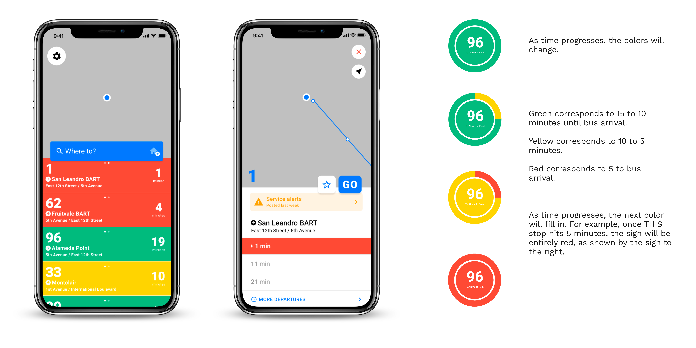

GRAPHIC DESIGN / UIUX
How might we improve the campus
travel experience?
travel experience?
Getting to class is an absolute struggle, especially when classes are far out of reach. When it comes to someone living far away from campus, the AC Transit is the way to go. However, the bus often is inaccurate and inconsistent when it comes to bus arrival times. At certain peaks of the day, the bus becomes extremely cramped, often requiring other riders to wait for the next one.
To solve these problems, I redesigned the AC Transit mobile app and bus stops to make the travel to and from campus more inclusive and reliable to bus riders.
To solve these problems, I redesigned the AC Transit mobile app and bus stops to make the travel to and from campus more inclusive and reliable to bus riders.
Role
Graphic DesignerUser Researcher
UI/UX Designer
Prototyping
(Research) Team
Tanvee DesaiXiaokang Feng
Kamya Venkatesan
Tools
Adobe DrawAdobe Illustrator
Figma
Timeline
2 months, Oct to Nov 2019 (Research)1 month, Nov 2019 (Ideation and Prototyping)
OVERVIEW
Getting to class is an absolute struggle, especially when classes are far out of reach. When it comes to someone living far away from campus, the AC Transit is the way to go. However, the bus often is inaccurate and inconsistent when it comes to bus arrival times. At certain peaks of the day, the bus becomes extremely cramped, often requiring other riders to wait for the next one.
I wanted to redesign the current Transit bus stops to have it be more responsible for visibly showing late bus stops and accurate bus times. I wanted to make the bus stop more accessible for people who either regularly used the app and those who didn’t use the app, and those relatively near the bus stop. In addition, I aimed to rebrand the AC Transit bus stop and mobile app. With my redesign, students would feel more confident in their campus travels.

USER RESEARCH
I worked with three other designers to improve the campus travel experience, who felt that as students, campus terrain was often difficult to navigate around, to, and from. We interviewed three people each to compile insights, conducted secondary research to verify bugs other students faced that was a common problem within the scope of our community, and presented our findings to the class. After the user research stage of this case, we diverged to design our own individual solutions.
Check out our case study here.
Check out our case study here.

Current AC Transit designs for both bus stop (left) and mobile app (right)
LOW-FIDELITY
I decided to move on with this app idea because I think that it would solve the inaccurate bus arrival time and students being late to the bus issues. The color would alternate based on how many minutes are left for the bus to arrive. In addi- tion, the colors and post would be visible from far away distances to where students are able to speed-walk or run when they see the yellow or red color on the sign.

IDEATION

If the bus was delayed, a red text would be in place under the sign. As time progresses, the next
color would fill in place from the previous color, indicating that the bus was soon to arrival.
color would fill in place from the previous color, indicating that the bus was soon to arrival.
Some feedback I received suggested for me to apply multiple buses for the stop sign, as some bus lines might delay and, therefore, multiple buses mighty stop by at the same stop at the same time. Additionally, I needed to make my bus stop more accessible for those who were visually impaired, so that they were also able to tell the status of the upcoming bus.
USER TESTING
After performing user testing with the mid-fi prototype, I received feedback from users that they liked the overall design layout, especially with the correlation of the colors on both the bus stop and the app. Some users stated that they found the history section to be a “waste of space” and instead to keep the icon layout design similar to the original Transit app. Additionally, I still needed to have both the bus stop and app more accessible, despite an added voice feature that would be similar to the ones for traffic walking lights.
FINAL DESIGNS

I researched more on how to apply inclusive design, especially to those with impaired sight. One of the recommendations was to add pattern, rather than apply exclusively to color. To differentiate the minutes leading up to the upcoming bus arrival, I used stripes - varying in width.
To inform other users about the branding changes, I added a button that directs uses to the icon key, which identifies the certain icons depicted on the app.
To inform other users about the branding changes, I added a button that directs uses to the icon key, which identifies the certain icons depicted on the app.
INTERACTION
REFLECTION
I expanded my knowledge and skill in design. My prior knowledge of design was to simplify complex and overwhelming data into a simple, easily-digestible visual graphic. By working on this case study, I focused less on the ‘aesthetics’ on design and focused more on the approach. I drew my approach to innovation through accessing the needs of the people, the feasibility of the product, and the success of that product.